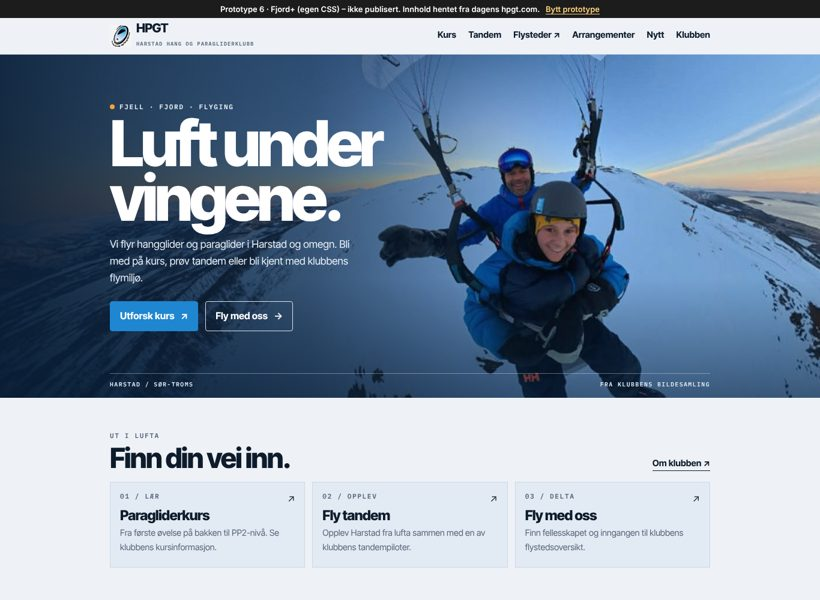
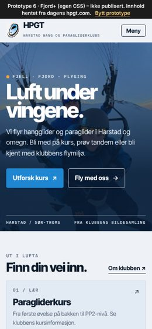

6–8
Fjord+
Styrets favorittBygget på skissen styret syntes var mest ryddig, med blå farger fra logoen, aktiviteter på forsiden og kategorifarger som på dagens hpgt.com. Samme design er laget tre ganger, med ulik teknikk bak. Sammenlign dem: de skal se like ut.
Prøv redaktøren →